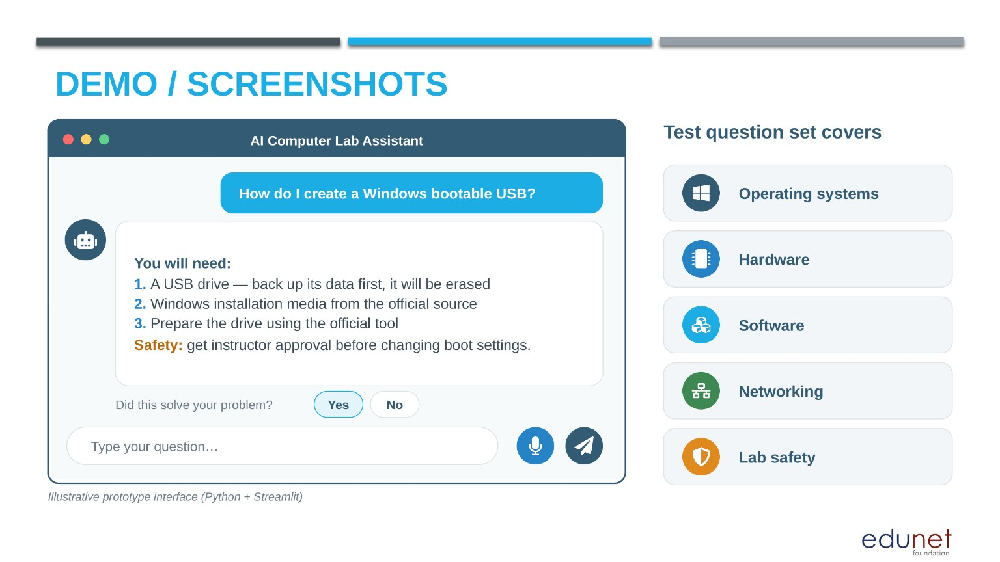

CURRENT2026 — 2027
Craft Instructor Training Scheme (CITS)
National Skill Training Institute (NSTI), Kanpur
Trade: Information Technology
OPEN TO LEARNING & OPPORTUNITIES
An aspiring IT professional interested in technology, computer systems and building practical solutions. Currently developing my skills through CITS training at NSTI Kanpur.
01 / ABOUT
I’m building my foundation in Information Technology with a focus on learning, exploration and practical problem-solving.
I am currently pursuing Craft Instructor Training Scheme (CITS) in the Information Technology trade at National Skill Training Institute (NSTI), Kanpur. I previously completed B.Tech from Chhattisgarh Institute of Technology, Jagdalpur, in 2026.
This portfolio is a place to share my learning journey and projects as I continue growing in the IT field.
02 / EDUCATION
National Skill Training Institute (NSTI), Kanpur
Trade: Information Technology
Chhattisgarh Institute of Technology (CGIT), Jagdalpur
Completed in 2026
03 / SKILLS
My technical skill list will be updated as I document the tools and technologies I have practised. I have not added unverified skill ratings or proficiency claims.
04 / PROJECTS
A project from my Information Technology learning journey.

AI / IT PROJECTA project listed in my portfolio. The detailed description, technology stack, features and personal contribution will be added after the project implementation is documented.
05 / CERTIFICATIONS
A certificate documenting my continued learning in AI literacy.
IBM SkillsBuild
Issued: 30 October 2026
View certificate PDF ↗ Verify credential on Credly ↗06 / CONTACT
Have an opportunity, a project idea, or want to connect about technology? Feel free to reach out.